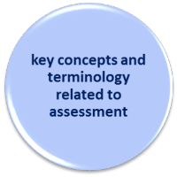

Delta Module One Course
 |
Syllabus area 6
|
|  |
This section of the syllabus covers these three areas and you should be able to:
|
To be able to do this you need a knowledge of assessment. The
main guide on this site is devoted to the area and there is little
point in repeating its contents here.
You should, however, follow it carefully, especially if assessment
is an area you know little about, and then return to this page to try some tests of your knowledge.
Click
here to open the guide in a new tab.
 |
An overview of what you need to know |
Testing and assessment is a technical area requiring design,
mathematical and psychological skills, some of which are beyond the
brief (or interests) of many teachers who have no ambition to become
designers of public examinations or generic international or
national tests.
Nevertheless, expert teachers constantly assess and evaluate their
learners' abilities by, for example, listening to them, reading
what they write or constructing progress tests of one kind or
another. It is not an exaggeration to say that a teacher's
ability to evaluate learners' abilities is a factor without which
little effective teaching and learning will take place.
A basic understanding of key concepts such as formative vs.
summative testing, formal vs. informal testing, validity,
reliability and practicality is essential for any teacher.
In addition, of course, the ability to construct good questions in
the classroom and effective, varied, targeted and valid tests of our students'
abilities is essential.
The guides linked here are intended to encourage these skills and
that knowledge.
All the guides open in a new tab so you can simply shut
them to come back to this page when you are done.
 |
What to avoid in the examination |
The examination is not an invitation to you to write all you know
about concepts such as reliability, validity, objectivity, marking
schemes and so on.
You have to apply your knowledge of assessment procedures critically
to the data with which you are presented and make sensible comments
about the suitability or otherwise of the assessment procedures and
tasks.
All of this is premised on the learner(s) for whom the test is intended.
The rubric requires you to:
Make a total of six points. You
must include both positive and negative points.
Making more than six points has two negative effects: a) it wastes
your time and b) the marker will only consider the first six points
you make and if they do not cover both positive and negative aspects
you will not have conformed to the instruction and will lose
significant marks no matter how good points 7 onward are.
You should also note that, despite the fact that this section of
the syllabus is entitled, in the Cambridge Syllabus document:
Key concepts
and terminology
related to assessment
(Cambridge English Delta Syllabus
Specifications, page 3, emphasis added)
the report on the 2015 examination has:
there are no longer separate
marks available for the accurate use of terminology
so randomly inserting reference to validity or whatever is pointless.
Unfortunately, Cambridge's examiners' advice is contradictory here
because you are also admonished to:
explicitly state what kind of test it is ... to use the
correct terminology relevant to that type of testing
and that will require you state whether the test is diagnostic,
formative, summative or what.
You are also advised to ensure that you:
understand the meaning of key testing terms, particularly
backwash, fresh starts and construct validity and refer to them
where appropriate
All very confusing and internally inconsistent, isn't it?
(Fresh starts, by the way, refers to whether the test-takers answers
are constrained by previous tasks or whether a fairer approach is
taken in which each task is independent and does not rely on a good
response to a previous one.)
The advice is, therefore, that you use the terminology where you
need it to make your points but do not use it without making it
clear that you know what it means and do not use it inaccurately or
irrelevantly.
The second thing to avoid is misreading or not reading the rubric. This will tell what the test material is intended to achieve and it may also tell you something about the needs and characteristics of the course and the learner(s). It is against that yardstick that you need to evaluate it. The question does not invite you to evaluate the test items globally.
 |
Ten things to consider when evaluating the test |
Here's a list of ten criteria you might want to apply but remember that not all of them will be relevant to the examples you are given:
- type of test: diagnostic, formative, summative, barrier etc. In other words, what is the test for?
- task types: is this fair or will it advantage some types of learners whose cultural backgrounds will not lead them to guess in multiple-choice tests or be very forthcoming in one-to-one interviews?
- instructions: are the instructions clear? Do the instructions imply that the learners should already be aware of what they have to do?
- language systems content: is this relevant to the course and the needs of the learners?
- language skills content: is this central because it is relevant or are the skills having to be applied when testing something else and therefore muddying the waters?
- doability: too easy and the test tells you nothing, too difficult and it only tests the best. Is the test at the right level considering the current interlanguage of the test taker(s)?
- length: too long and marking is slow and test-takers become bored and tired; too short and there is inadequate coverage so the test is not reliable.
- direct or indirect testing: direct testing tells you what people can do but indirect testing often only targets what people know (by breaking things down) and does not tell you whether they can put the skills and knowledge together.
- assessment procedures: will the test be easy, reasonably objective and reliable to assess so the outcomes are trustworthy?
- content: are the topics appropriate to the learners taking
the test (their ages, likely interests and so on)?
If this is a summative or achievement test, does it test what has been taught?
Will the learners think the test is fair (face validity)?
 |
Now try a task.
|
In the examination, you must identify positive and negative
comments. If you only have one or the other, go back and try
to be a bit more balanced.
If you return to this task after you have completed the examination
preparation and done the tests for this area, you may gain even more
confidence.
| Syllabus areas | Guides to these areas |
| Diagnostic,
formative, summative assessment Concepts of validity, reliability, impact and practicality Widely available tests and purposes for which they are used |
The guide to assessment |
| Asking good questions (a simple guide to a difficult skill) | |
| The guide to assessing Listening Skills | |
| The guide to assessing Reading Skills | |
| The guide to assessing Speaking Skills | |
| The guide to assessing Writing Skills | |
| The guide to assessing Grammatical Competence | |
| The guide to assessing Vocabulary |
 |
Where next? |
Once you have worked your way through the guides and done some research, it's time to test your knowledge in these areas and then do some revision exercises.
Here are the choices:
| A set of tests | to check what you can remember. Do these first. |
| Revision course index | there is a section of the Delta Module One Revision Course for this area of the syllabus |
| Examination practice | apply the knowledge you have gained to practising for the examination (new tab) |
 |
 |
| course index | exam practice |